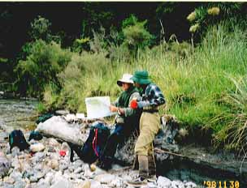
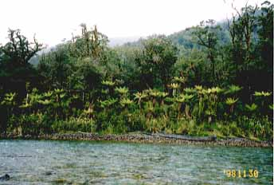
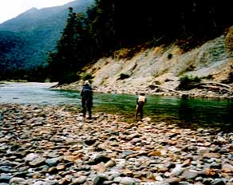
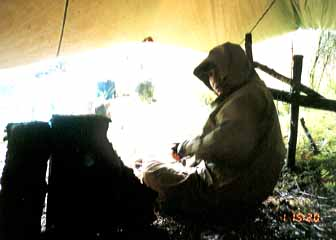
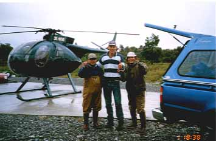

写真集
98/11/30～12/01 雨の原生林から生還

しばし、休息
うーん、魚が少ないなぁ......ティータイムに地図を広げて作戦会議？のひとときです。
この時のウェストランドは、晴天続きでどの川も水量が少ないとのこと。この川も渇水で水温が上昇しているようであり、鱒たちは上流へと移動しているようです。

まわりはすべて原生林
ふと竿を振る手を休めてあたりを見ると、見事な原生林が広がっています。
川そのものは、水温が低いのと、度重なる洪水があるため川底に苔が生えておらず、水生昆虫も少ないようです。いわゆるやせた川のようです。

あきらめずになおも攻める
ヘリで降りていきなり大物！という夢はもろくも崩れ、苦しい戦いが続きます。
何尾か狙ってキャストしたのですが、どうもかんばしくない結果でした。我慢我慢.......

雨のテント
キャンプの一泊を過ごして、二日目は上流部を攻めてみたものの、雨が激しくなってきて昼過ぎに釣りをやめてテントサイトまで戻ってきました。
ヘリが来る午後６時半まで、じっと雨中のテントで待つことにします

あぁーっ！帰ってきたぜーっ！
ヘリが迎えに来る直前には雷まで鳴り出して、心中穏やかでないものがありました。おまけに帰りのフライトではけっこう揺れたり視界が悪かったりでヒヤヒヤものでした。
１尾も釣れなかったけど、生きてるだけでシアワセです。
地面に足が着いてるって、いいものですね。（笑）
写真集 目次へ
サイトマップ
ホームへ
お問い合わせ